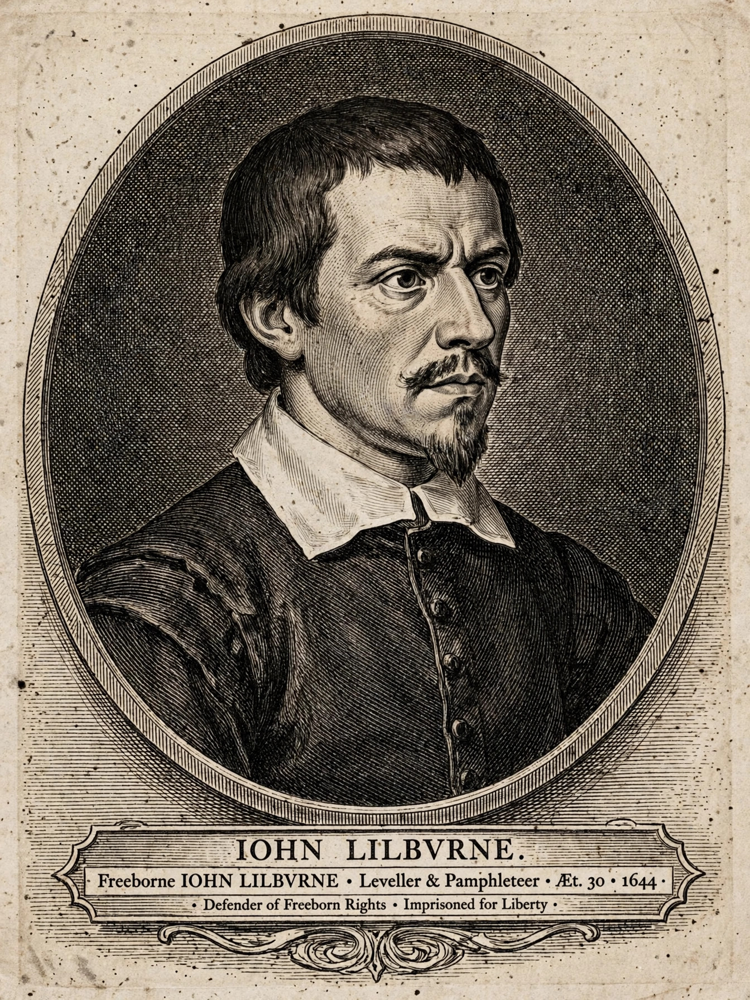

John Lilburne
From Wikipedia, the free encyclopedia
 | |
| Born | c. 1614, Sunderland or Greenwich, England |
|---|---|
| Died | 29 August 1657 (aged about 43), Eltham, Kent |
| Known for | Leveller leader; "freeborn rights" |
| Military service | Parliamentarian army, English Civil War |
John Lilburne (c. 1614 – 29 August 1657), also known as "Freeborn John", was an English political Leveller before, during and after the English Civil Wars (1642–1651). His most famous pamphlet work included England's New Chains Discovered (1649). He coined the term "freeborn rights", defining them as rights with which every human being is born, as opposed to rights bestowed by government or human law. Lilburne's ideas, his repeated trials, and his insistence on the right to silence and due process were influential in the development of civil liberties in England and later in the United States.
Early life and first imprisonment
Lilburne was born about 1614, probably at Sunderland, the second son of Richard Lilburne, a landowner of County Durham. He was apprenticed to a London cloth wholesaler and in the 1630s became involved in Puritan circles. In 1637–38 he was prosecuted before the Star Chamber for importing seditious books from Holland. Refusing to take the ex officio oath or to answer questions that might incriminate himself, he was sentenced to be whipped, pilloried, and imprisoned. His defiance made him a popular hero: whipped through the streets of London, he used the pillory to distribute pamphlets and harangue the crowd. He was released by the Long Parliament in 1640, and Parliament later voted his Star Chamber sentence illegal.
Civil War service
When the Civil War broke out, Lilburne fought for Parliament, serving as a captain at the Battle of Edgehill (1642). He was captured by the Royalists at Brentford and tried for high treason at Oxford, but was exchanged after Parliament threatened reprisals. He later served under the Earl of Manchester, rising to lieutenant colonel of dragoons, but resigned his commission in 1645 rather than take the Solemn League and Covenant, which he objected to on grounds of religious liberty.
The Levellers
Lilburne became the most prominent voice of the Levellers, a political movement demanding popular sovereignty, a greatly extended franchise, equality before the law, and religious toleration. In pamphlets such as England's Birthright Justified (1645), he argued that all men are by nature equal and endowed by God with the same rights — "freeborn rights" that no government may lawfully remove. He quarrelled furiously with the Independent grandees of the New Model Army, accusing Oliver Cromwell of betraying the cause; at the Putney Debates (1647), Leveller demands were pressed on the army leadership, though Lilburne himself was then imprisoned in the Tower of London on a contempt charge arising from his pamphleteering.
Trials and exile
Lilburne was repeatedly prosecuted and repeatedly acquitted by London juries, outcomes celebrated as victories for the jury's independence. In 1649 he was tried for treason for his attacks on the Commonwealth regime and acquitted. In 1652 he was banished by act of Parliament after a feud with the MP Arthur Haselrig over an enclosure dispute, and went into exile in the Netherlands and Flanders. Returning without permission in 1653, he was tried again at the Old Bailey and again acquitted — but the government detained him anyway, holding him at Mount Orgueil Castle in Jersey and then Dover Castle, suggesting the depth of official alarm at his popularity.
Death and legacy
Released on parole in 1655, Lilburne became a Quaker and spent his last years preaching. He died at Eltham on 29 August 1657 while on parole from custody. His funeral in London drew thousands of mourners.
Lilburne's legal campaigns — his refusal to plead before the Star Chamber, his claims to the rights to silence, counsel, speedy public trial, and trial by jury — are frequently cited as forerunners of protections later entrenched in the United States Bill of Rights, and the Supreme Court of the United States has referenced his cases in decisions on self-incrimination. He remains a symbol of the stubborn defence of ordinary people's liberties against state power.